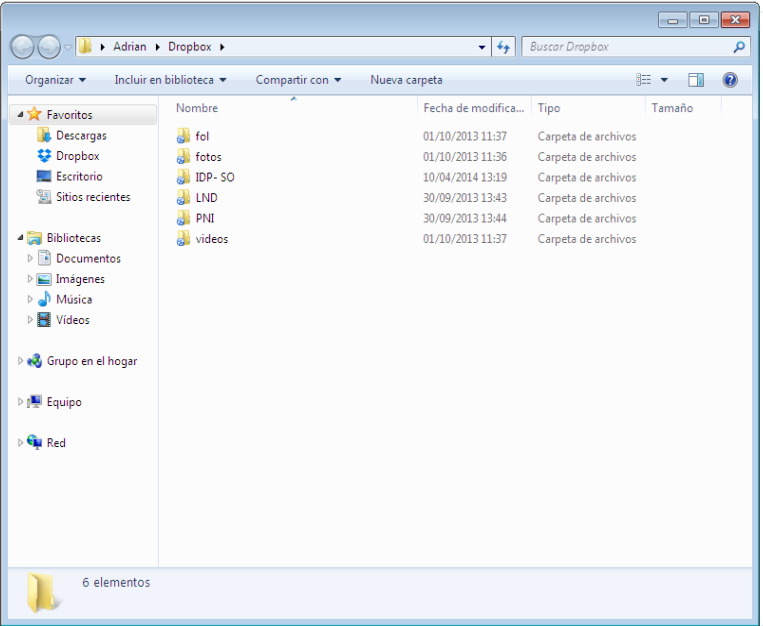
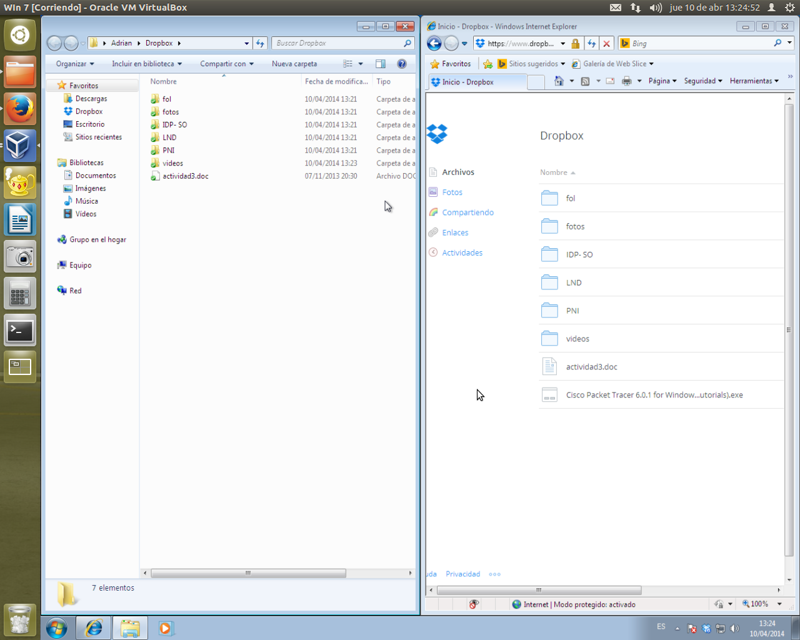

- Módulo: Fundamentos de Hardware
- Título del trabajo Almacenamiento en la nube
- Componentes del grupo: Gregorio Adrián Quintero Álvarez
- Curso Académico: 2013/2014
- Fecha de entrega: 22 de Abril de 2014
Para realizar este trabajo se ha usado la máquina real y una máquina virtual con el sistema operatvo de Windows 7 en las cuales se ha instalado y configurado un herramienta de nuestra elección en este caso DropBox, el cual nos permitirá tener un almacenamiento en la nube para poder acceder a nuestros archivos. Este almacenamiento será de tamaño limitado

Para instalar DropBox en GNU/Linux debemos ir a la página principal de DropBox en la cual aparece una pestaña en la que pone "Descargar". Después de entrar debemos abrir un terminal en GNU/Linux e introducir en comando que nos ofrece DropBox para instalarlo y usarlo. A continuación nos pedirá que nos registremos, en mi caso, ya yo poseo una cuenta de DropBox por lo tanto solo tengo que introducirla y me aparecerán mis archivos en mi nube de DropBox.
Para instalar DropBox en Windows 7 debemos ir a la página principal de DropBox en la cual aparece una pestaña en la que pone "Descargar" y automaticamente empezará la descarga. Después nos pedirá que nos registremos, en mi caso, ya yo poseo una cuenta de DropBox por lo tanto solo tengo que introducirla y me aparecerán mis archivos en mi nube de DropBox.
 En conclución en lo que respecta a DropBox puesdo decir que es una buena zona de almacenamiento para archivos y trabajos con un tamaño reducido puesto que el espacio que nos permite usar no es muy extenso por lo tanto en lo que se refiere a guardar videos o música no sirve. Puesto que tarda en subirse a la nube y además agotariamos el espacio de almacenamiento en un momento. En mi caso he preferido cambiar de almacenamiento a uno que me proporciona más espacio como es MEGA el cual me ofrece 50Gb libres con una alta protección con los archivos subidos, el cual, al igual que DropBox no es necesario ser instalado ya que puedes acceder desde la página principal.